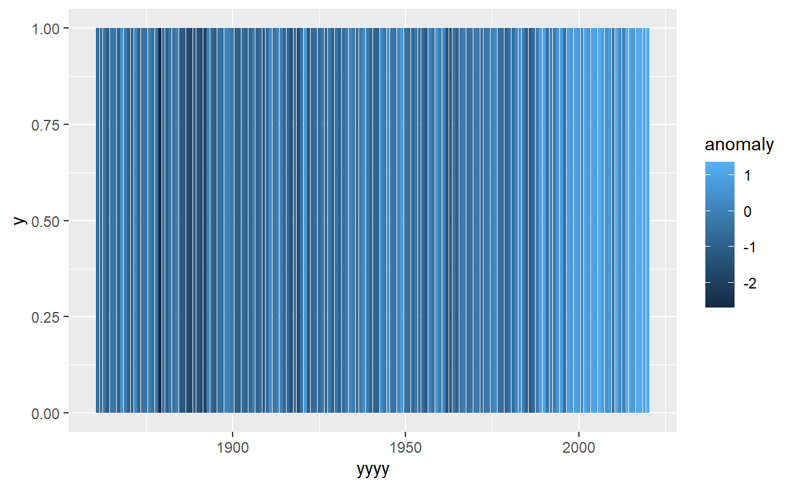
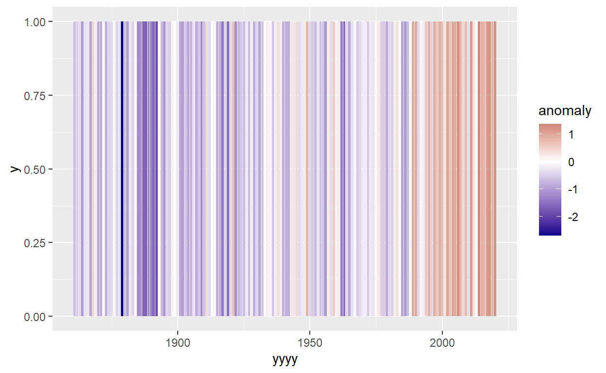
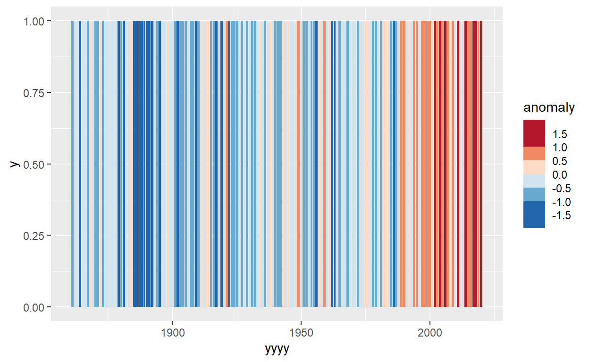

Introduction
One of the most famous visualisations of recent times not only came from ggplot2*, but also from the University of Reading itself!

Professor Ed Hawkin’s ‘Warming Stripes’ graph sparked huge amounts of interest, and debate, thanks to it’s innovative and striking yet easily understood presentation. You can’t go far on the University of Reading campus without seeing it plastered on a poster, sign or even face-mask.
If you aren’t familiar with this plot, then you probably haven’t been at Reading for very long, but you can read more about it here:
https://en.wikipedia.org/wiki/Warming_stripes
*(Minor side point: I believe (but may be wrong) that he used the Python implementation of ggplot2. Happy to be corrected if wrong! But the R version is better!)
It is possible to make these plots for ourselves in R, with almost identical formatting to the famous style, using only the skills we have learnt for importing data, and using dplyr & ggplot. But it will require some careful thinking and problem solving to get to that point!
This is the solution page! If you would like to attempt this problem yourself first, please download the files from here:
And there is also a video talking through this solution here:
Data & Methodology
We are going to use data from a weather station in Oxford, one of the longest running weather stations for which the data is easily available from the UK Met Service.
The warming stripes show us each ‘stripe’ represent one years data. The colour represents the difference between the yearly average temperature and the average temperature in the reference period, 1971-2000. This is known as the temperature anomaly. We would only want to include years where we have complete data available - given the seasonality of temperatures missing values will certainly lead to biased yearly averages.
Within the plot increasingly dark shades of red represent values with an increasingly positive temperature anomaly; increasingly dark shades of blue represent an increasingly negative temperature anomaly. An anomaly of 0, or close to 0, should be shaded in white, so that the colour scale is symmetrical. When trying to think how it should look visually, take a look at examples of this plot from https://showyourstripes.info/ to think about what stylistic changes made be needed to the defaults within ggplot2.
Stage 0: Load libraries
We need these dplyr and ggplot2. So let’s load them in!
library(dplyr)
library(ggplot2)Stage 1: Import Data
We can import the data in a fairly standard way, using read.csv, or the “import dataset” menus
oxford_data<-read.csv("oxford_data.csv")But if we check the data we notice that there is a problem with one of the columns.
summary(oxford_data)## yyyy mm tmax tmin
## Min. :1853 Min. : 1.000 Min. :-0.20 Length:2011
## 1st Qu.:1894 1st Qu.: 3.000 1st Qu.: 9.00 Class :character
## Median :1936 Median : 6.000 Median :13.80 Mode :character
## Mean :1936 Mean : 6.491 Mean :13.95
## 3rd Qu.:1978 3rd Qu.: 9.000 3rd Qu.:19.00
## Max. :2020 Max. :12.000 Max. :27.40
## rain
## Min. : 0.50
## 1st Qu.: 31.45
## Median : 49.70
## Mean : 54.70
## 3rd Qu.: 74.75
## Max. :192.90We can try and find exactly whats gone wrong by looking at the data file, or looking just at the column that is causing problems.
oxford_data$tmin## [1] "2.7" "-1.8" "-0.6" "4.5" "6.1" "10.7" "12.2" "10.8" "8.4" "7.4"
## [11] "2.3" "-1.3" "1.5" "0.6" "2.2" "3.5" "5.7" "9.7" "11.6" "10.7"
## [21] "8.4" "5.6" "2" "2.1" "-0.4" "-4.5" "0.1" "2.7" "4.9" "9.3"
## [31] "13.4" "12.2" "10.4" "8.2" "3.4" "-0.1" "2" "3" "0.6" "4.1"
## [41] "5.7" "9.5" "11.3" "12.5" "8.5" "6.9" "2.3" "1.4" "-0.6" "0.4"
## [51] "1.8" "3.7" "6.3" "10.6" "12.7" "13.2" "11.2" "7.8" "4.5" "4.5"
## [61] "-0.1" "-1.2" "1.1" "4" "6.2" "11.9" "10.6" "11.3" "11.2" "6.9"
## [71] "0.8" "2.4" "1.8" "2.7" "4.7" "3.5" "6.7" "11.1" "13.7" "12.5"
## [81] "9.4" "6.6" "1.5" "-1.1" "0.8" "-1.6" "1.9" "1.7" "7.7" "9.5"
## [91] "10.3" "10.9" "7" "7.3" "2.1" "---" "-0.7" "3.1" "3.4" "3"
## [101] "6.5" "11.2" "12" "12.7" "9.9" "9.5" "1.6" "1.5" "2.2" "3.4"
## [111] "3.9" "6.2" "9.2" "9.6" "10.6" "10.5" "9.9" "7.6" "0.4" "3.8"
## [121] "2.5" "2.7" "1.9" "4.7" "6" "9.6" "9.5" "11.9" "7.6" "7"
## [131] "4.6" "3.3" "-0.2" "0" "1.4" "4.3" "7.9" "9.8" "10.3" "8.8"
## [141] "9.4" "6.8" "2" "1.3" "-0.9" "0.2" "-0.2" "5.4" "8.1" "10.8"
## [151] "12.5" "10.8" "10.9" "6.1" "4" "3.4" "3.4" "1.3" "1.8" "4.7"
## [161] "4.8" "11.1" "11.2" "11.3" "10.3" "8" "3.7" "3.3" "-1.1" "4.4"
## [171] "0.5" "6.6" "6.8" "9.6" "10.5" "11.8" "9.6" "6.3" "1.6" "0.1"
## [181] "1.7" "3.3" "2.9" "4.6" "7.8" "9.4" "12.7" "12.5" "9.4" "5"
## [191] "2.6" "5.2" "3" "5.1" "1.1" "6" "6.5" "8.8" "12.4" "10.7"
## [201] "11.3" "6.1" "3.2" "1" "1.3" "0.8" "1.5" "3.7" "6.3" "11.2"
## [211] "13" "10.6" "8.2" "6.7" "2.1" "-2.3" "-1.2" "3.8" "3.2" "5.3"
## [221] "5.8" "9" "11.9" "12" "9.6" "6" "0.2" "0.9" "2.6" "4.7"
## [231] "3.6" "4.5" "5.9" "10.2" "12.9" "11.3" "10" "5.2" "4.6" "3.5"
## [241] "3.2" "-0.1" "2.2" "3.9" "5.4" "10.3" "11.8" "12.6" "7.8" "4.7"
## [251] "3.8" "2.1" "3" "1" "3.1" "5.4" "6" "9" "11.8" "11.2"
## [261] "10.4" "7.8" "2.5" "-2.3" "4.9" "-0.4" "2.4" "3.5" "7.8" "10.5"
## [271] "11.1" "12.8" "11.4" "6.4" "3.6" "2.4" "0.6" "3" "1.9" "4.8"
## [281] "4.7" "10" "13.1" "11.9" "9.8" "8.8" "4.1" "4.9" "3.2" "4"
## [291] "2.2" "4.3" "5.5" "10.5" "11.1" "11.9" "7.6" "5.2" "4.3" "2.3"
## [301] "2.6" "4.2" "2.2" "5.5" "8.4" "11.1" "12.6" "13.1" "9.4" "7.4"
## [311] "2.6" "-2" "-2.8" "1.1" "1.1" "2.4" "5.2" "10.2" "11.4" "11.8"
## [321] "9.5" "6" "0.9" "-3.2" "-2.5" "2.4" "2.5" "4.7" "6.4" "10"
## [331] "12.2" "13.2" "11.5" "4.9" "3.1" "3.6" "-4" "1.5" "2.1" "3.1"
## [341] "6.9" "10.3" "12.5" "10.8" "9.5" "4.2" "6.9" "2.1" "2.8" "3.5"
## [351] "4" "5.1" "7.3" "9.7" "11.9" "11.5" "8.3" "7.2" "3.5" "2.5"
## [361] "3.3" "4" "-1.2" "4.5" "7.1" "10.1" "11.2" "11.8" "10.4" "7.4"
## [371] "3.3" "2.7" "5.1" "3.1" "3" "3.1" "6.6" "9.9" "12.4" "12"
## [381] "10.9" "6.1" "2.6" "2.9" "0.9" "3.8" "1.2" "3.6" "5.3" "9.8"
## [391] "11.9" "9.9" "8.6" "4.8" "4" "1.3" "-0.5" "-1.1" "1.5" "3.8"
## [401] "7" "9.5" "12" "12" "10.3" "8.7" "3.8" "-0.3" "-0.5" "0.5"
## [411] "-0.1" "1.9" "6.1" "10.2" "12.4" "10.5" "8.1" "3.5" "2.2" "0.3"
## [421] "0.7" "-0.7" "0.9" "3" "6.3" "9.6" "10.9" "10.5" "8.8" "3.7"
## [431] "6" "2.5" "-0.1" "-0.4" "1.4" "3.8" "8.9" "10.9" "11.3" "10.8"
## [441] "9.1" "5.4" "4.3" "0.1" "3.3" "0.3" "2.6" "3" "6.6" "9.7"
## [451] "11.2" "10.8" "9.9" "5.7" "3" "-4" "-1.9" "-0.2" "0.9" "2.2"
## [461] "5.6" "10.4" "10.7" "10.9" "9.8" "6.6" "3.2" "1.6" "-0.3" "0.9"
## [471] "-0.9" "1.7" "6.9" "8.7" "10.3" "11.5" "8.9" "4" "3.8" "-0.6"
## [481] "-0.3" "2.5" "1.7" "3.9" "7.7" "10.2" "12.5" "13" "8.9" "6.6"
## [491] "1.7" "1.3" "1.2" "2.2" "2.2" "5.1" "5.3" "9.9" "12" "11"
## [501] "8.3" "6.9" "5.4" "2.8" "-1.8" "-5.3" "2" "5" "7.3" "9.8"
## [511] "12.2" "12.1" "9.9" "3.9" "5.4" "1.9" "2.4" "1.4" "4.3" "5.4"
## [521] "6.6" "12" "12.1" "10.6" "10.7" "4.5" "1.6" "1.7" "-0.2" "4.1"
## [531] "4.1" "4.1" "5.7" "11.2" "12.3" "12.1" "8.9" "6.3" "4.3" "1.9"
## [541] "4.2" "2" "0.6" "3.7" "6.8" "9.5" "11.1" "12.5" "10" "8.4"
## [551] "4.7" "5.1" "2.9" "2.1" "0.4" "5.1" "6.2" "10.3" "13.3" "12.3"
## [561] "10.3" "4.7" "5.4" "-0.2" "2.1" "0.7" "0.9" "3.8" "6.3" "10.6"
## [571] "13.4" "11.5" "9.2" "6.7" "5.4" "5" "1" "0.1" "1.2" "4.3"
## [581] "6.2" "9.4" "13.2" "11.5" "10" "6.2" "1.7" "0.9" "2.6" "-0.5"
## [591] "3.8" "3.5" "5.4" "9.8" "11" "11.1" "8.5" "6.8" "4.5" "2.5"
## [601] "2.4" "4.5" "4.3" "2.6" "7.2" "8.9" "11.9" "10.9" "9.7" "8.5"
## [611] "3.9" "1.6" "1.4" "1.5" "1.6" "5.4" "7.4" "9.2" "13" "11"
## [621] "7.9" "6.3" "2" "1.6" "0.4" "3.2" "3.9" "4.5" "6.1" "10.9"
## [631] "13.4" "11.4" "9.4" "3.8" "2.2" "2.2" "3.1" "0.7" "2.1" "2.1"
## [641] "7.2" "9.3" "11.6" "12.6" "9.4" "8.3" "4.7" "0.6" "1.1" "0.3"
## [651] "1.8" "4.1" "7.3" "9.5" "10.4" "11" "9" "7" "4.2" "3"
## [661] "-0.4" "2.7" "1.5" "2.4" "9" "9.8" "12.2" "10.7" "9.4" "8.1"
## [671] "5" "1.6" "1.1" "-0.6" "1.2" "3.5" "5.4" "8.8" "11.7" "11.7"
## [681] "9.1" "8.1" "2.3" "1.9" "1.6" "2.8" "1.9" "4.2" "7.3" "11.3"
## [691] "11.1" "12" "9.1" "8.5" "0.4" "4.7" "1.3" "2.4" "2.7" "4.2"
## [701] "8.4" "10.5" "13.1" "14" "9.4" "6.7" "3.6" "4.6" "1.7" "3.7"
## [711] "5" "3.8" "8.8" "10.2" "12.5" "10" "7.7" "3.9" "4.1" "5"
## [721] "3" "1.9" "3.3" "4.7" "7.8" "10" "11.4" "11.1" "10.8" "8.5"
## [731] "5.7" "2.8" "1.2" "3.8" "3.3" "4.7" "6.4" "10" "12.2" "12.1"
## [741] "8.3" "7.2" "4" "2.6" "2.2" "1.9" "1.8" "3.5" "6.4" "9.5"
## [751] "11.3" "12.2" "8.6" "6.3" "0.1" "3.5" "5.1" "1.1" "1.1" "4.3"
## [761] "7.6" "8.1" "11" "12.6" "9" "8.2" "3.8" "-0.6" "0.1" "-1.4"
## [771] "0" "1.8" "8.2" "10.8" "11.9" "12.7" "10.8" "4" "5.3" "-0.7"
## [781] "1.3" "3.9" "2.1" "3.6" "8" "8.5" "11.7" "12" "9" "6.4"
## [791] "2.1" "5" "0.6" "-1" "1" "3.3" "7.8" "9.7" "10.2" "12"
## [801] "8.7" "2.3" "1" "3.2" "2.8" "2.7" "3.8" "5.9" "7.8" "10.1"
## [811] "11" "9.7" "9.3" "6.6" "3.4" "2.2" "5.2" "1.4" "4.1" "3.9"
## [821] "6.9" "9.5" "13.3" "12.1" "9.3" "8.2" "1.7" "3.6" "1.3" "1.4"
## [831] "1.8" "1.9" "8.1" "9.3" "10.4" "10.1" "8.8" "4" "2.3" "3.9"
## [841] "2.2" "3.7" "3.6" "4.3" "6" "8.8" "13.5" "11.1" "8.5" "7.1"
## [851] "0" "1" "3" "0.4" "-0.2" "3.7" "8" "10.4" "10.9" "10.5"
## [861] "10.5" "7.3" "4.8" "4.3" "2.3" "2.5" "1.5" "3.6" "7.8" "9.9"
## [871] "12.3" "12" "7.8" "6.9" "1.4" "0.4" "1.5" "4.7" "3.3" "5.2"
## [881] "6.6" "9.4" "12.9" "12.1" "11" "4.5" "3.6" "1.3" "1.8" "1.3"
## [891] "4.4" "4.5" "6.8" "8.8" "12.6" "12.2" "9.6" "6.8" "3.5" "0.3"
## [901] "2.2" "2.2" "3.4" "4.5" "6.4" "9.1" "12.4" "11.7" "7.9" "6.8"
## [911] "4.6" "0.4" "-1.1" "-3" "-0.1" "2.5" "6.4" "8.9" "11.2" "11.6"
## [921] "10.7" "6.3" "3.3" "3.4" "3.4" "0.3" "1.8" "5" "7" "10.8"
## [931] "11.7" "12" "10.5" "7.5" "2.8" "1.9" "0.8" "1.3" "0.3" "4.7"
## [941] "7.8" "11" "12.1" "11.2" "8.3" "5.2" "5.1" "2.8" "3.5" "-0.4"
## [951] "0.4" "3.8" "7.5" "9.5" "12.7" "13.6" "9.7" "5.9" "4" "3.5"
## [961] "-0.7" "1.4" "3.3" "4.5" "8.1" "10.6" "13.6" "12.7" "10.7" "6.7"
## [971] "2.8" "-0.7" "0.6" "-0.5" "1.3" "4.5" "6.9" "10.6" "12.9" "11.4"
## [981] "10.7" "7.6" "3.9" "5.9" "2.5" "2.9" "2.8" "4.4" "5.4" "11.2"
## [991] "12.7" "12.1" "10.2" "6.1" "4.3" "0.9" "1.7" "-0.3" "4.1" "2.9"
## [1001] "6.8" "10.6" "12" "11.7" "11.3" "5.2" "2.2" "2.2" "2.5" "3.5"
## [1011] "0.8" "5.8" "8.2" "10" "12.6" "12.5" "9.1" "7.2" "1.6" "0.7"
## [1021] "3.4" "2" "4.3" "2.5" "6.5" "10.8" "11.7" "12.6" "10.1" "7.1"
## [1031] "6.9" "1.5" "2.3" "2.8" "2.8" "4.9" "7.3" "9.7" "12.1" "12.4"
## [1041] "10.8" "5.2" "6.5" "0.6" "-4.6" "0.2" "2.5" "5" "7.8" "11.1"
## [1051] "11.1" "11.1" "8.6" "6" "4.3" "0.8" "-1.2" "1.3" "1.4" "3.1"
## [1061] "5" "10.9" "13.1" "11.3" "10.4" "6.4" "4.2" "2.7" "-2" "-2.6"
## [1071] "1.9" "5.1" "6.8" "9.5" "11.8" "12.8" "10" "7.3" "1.9" "4.7"
## [1081] "2.9" "2.7" "2.2" "6.9" "7.7" "10.3" "11.9" "12.4" "9.2" "6.8"
## [1091] "3.1" "0.7" "3" "0.9" "1.2" "6.1" "6.5" "9.6" "13.1" "13"
## [1101] "8.6" "6.6" "3.6" "0.8" "-2" "4.7" "3.9" "5.6" "8.2" "10.8"
## [1111] "12.8" "11.7" "11.5" "8" "4.4" "2.5" "0.1" "4" "1.3" "5"
## [1121] "6.2" "9.5" "12.7" "11.4" "11" "7.1" "5.7" "-0.1" "-0.6" "-4.4"
## [1131] "1.3" "5.2" "9" "11.4" "13.6" "13.1" "11.1" "5.6" "4.6" "2.8"
## [1141] "3.2" "2.2" "3.5" "4.4" "6.5" "9.9" "12.1" "11.9" "10.7" "6.4"
## [1151] "4.2" "3.4" "3.1" "1.6" "1.7" "6.1" "6.6" "10.3" "12.8" "12.6"
## [1161] "12.5" "8.4" "3.4" "3.3" "1.5" "2.8" "3.6" "4.2" "7.1" "11.8"
## [1171] "12.5" "12.2" "10" "6.6" "4" "-0.7" "2" "1.4" "1.6" "2.9"
## [1181] "6.5" "9.4" "12.1" "11.7" "10.7" "5" "6.2" "3" "0.3" "0.3"
## [1191] "3.9" "5.4" "9.5" "10.5" "12.9" "12.6" "7.2" "5.6" "1.3" "-0.6"
## [1201] "0.8" "1.1" "0.3" "3.5" "8.2" "10.5" "11.7" "12.2" "10" "6.5"
## [1211] "5.9" "5" "0.3" "0.2" "2.9" "2.8" "7.2" "10.3" "11.3" "11.3"
## [1221] "9.4" "9.3" "3.8" "4.4" "0.3" "-1.1" "-0.4" "5.6" "6" "10.1"
## [1231] "12.6" "13.6" "10" "5.4" "3.7" "2.2" "1" "-3.5" "2.2" "2.6"
## [1241] "7.1" "9.6" "12.5" "10.6" "11.1" "5.8" "2.9" "3.5" "3" "3.2"
## [1251] "5.9" "5.1" "6.2" "10.1" "13.4" "12.1" "9.7" "7.6" "3.7" "1.6"
## [1261] "1" "2.3" "0.9" "3.6" "7.9" "10.7" "12.3" "12.7" "11.8" "8.1"
## [1271] "4.2" "2.7" "-0.6" "1.3" "4.1" "6.3" "7.7" "10.9" "12.8" "13"
## [1281] "9.4" "7.8" "3.7" "3.4" "1.6" "1.9" "3.9" "4.8" "8.8" "11.9"
## [1291] "11.9" "11.4" "9.8" "7.9" "4.7" "2.2" "1.8" "4.9" "3.7" "7"
## [1301] "7.2" "10.2" "11.9" "12" "11.5" "7.5" "3.1" "-0.3" "1.6" "1.6"
## [1311] "-0.7" "4.5" "7" "9.3" "11.8" "11.6" "9.5" "6.8" "2.8" "-1.6"
## [1321] "-5.8" "-3.1" "3.1" "5.7" "6.9" "11" "11.4" "11.2" "9.7" "8.4"
## [1331] "6.3" "0" "1.1" "2.5" "2.1" "5.6" "9.3" "10.7" "12.7" "11.8"
## [1341] "9.6" "4.9" "5" "0.7" "1.2" "0.5" "1.8" "4.5" "8.4" "10.8"
## [1351] "11" "11" "9.1" "7" "1.9" "2.4" "0.8" "4.6" "3.2" "5"
## [1361] "7.2" "11.3" "11.7" "11.1" "10.3" "7.9" "2.9" "3" "2.6" "2.9"
## [1371] "4.2" "4.7" "7.5" "9.9" "13.1" "12.3" "10.9" "8.8" "3" "2"
## [1381] "2" "-0.1" "3.6" "4.4" "6.7" "11.4" "12" "12.3" "11.1" "10.6"
## [1391] "4.6" "1.1" "3.6" "-0.9" "1.1" "3.7" "8.3" "9.5" "13.1" "13.2"
## [1401] "10.8" "9.9" "3.2" "1.2" "1.9" "0.6" "0.6" "3.8" "8.7" "11.6"
## [1411] "11.9" "12.2" "11.2" "7.4" "5.6" "1.8" "2.5" "1.5" "2.2" "4.3"
## [1421] "7.4" "9.4" "13.1" "12.7" "9.8" "7.4" "3" "4.6" "2" "2.5"
## [1431] "2.8" "5.4" "7.4" "8.8" "11.8" "11.6" "8.3" "7.4" "3.8" "3.5"
## [1441] "2.1" "1.3" "2.1" "4.2" "8.1" "10.9" "12.2" "12.8" "11" "5.5"
## [1451] "3.2" "2.3" "3.6" "3.1" "2.4" "3.8" "6.8" "10.1" "12.2" "11.3"
## [1461] "9.1" "4.9" "5" "5.9" "4.6" "1.8" "2.5" "5.3" "6.4" "9.4"
## [1471] "13.4" "14.1" "9.9" "6.5" "2.5" "1.7" "3.4" "2.3" "1.7" "4.1"
## [1481] "8.3" "12.6" "13.2" "11.4" "10.5" "8.3" "3.4" "-0.4" "0.7" "3.3"
## [1491] "4.3" "3.8" "6.1" "8.5" "12" "12.2" "10.4" "8.3" "3.8" "3.9"
## [1501] "0.7" "0.4" "3.3" "3.3" "7.1" "9.6" "11.5" "11.4" "10.6" "8.1"
## [1511] "5.5" "2.2" "-3.1" "-0.9" "2.1" "4.8" "6.8" "10.7" "13" "11.7"
## [1521] "9.6" "8" "3.9" "3.8" "-0.3" "3.2" "2.3" "4.9" "6.3" "10.7"
## [1531] "11.2" "12.8" "12.2" "6" "4.4" "2.9" "2.4" "0.2" "6.4" "4.4"
## [1541] "8.2" "10.4" "12.3" "12.7" "11" "5.7" "4.9" "-2" "-0.1" "2.7"
## [1551] "2.9" "4.9" "7.2" "12.7" "12.8" "12.9" "10.6" "7.8" "6.1" "1.9"
## [1561] "4.7" "-0.7" "3.3" "3.7" "7.8" "11" "15.4" "13.3" "11.1" "7.7"
## [1571] "5.2" "3.2" "1.5" "1" "2.4" "3.4" "6" "10.8" "12.2" "13.6"
## [1581] "11.2" "8.6" "6" "2.7" "-1.9" "-0.8" "1.4" "5.1" "7.3" "9"
## [1591] "12.7" "12.1" "11.2" "7.9" "1.7" "5.1" "1.1" "-4.1" "2.1" "3.1"
## [1601] "8" "10.5" "12.8" "11" "7.5" "7.8" "5.4" "3.8" "-1.4" "1"
## [1611] "1.5" "6.6" "6.5" "10.4" "12.7" "12.5" "10.9" "6.7" "4.3" "3.7"
## [1621] "3.3" "2.3" "3.8" "4.6" "7.8" "10.3" "11.6" "11.9" "10.4" "8"
## [1631] "1.6" "5.4" "3.6" "3" "4.6" "3.6" "8.6" "10.5" "14" "12.4"
## [1641] "11.9" "8.9" "3.2" "3.3" "4.5" "5.3" "5" "3.3" "7.8" "10.7"
## [1651] "12.2" "14" "9.4" "9.3" "4.3" "1.7" "1.2" "-1.6" "5.1" "4.6"
## [1661] "7.4" "9" "13.7" "13.3" "10.6" "7.3" "4.5" "1.6" "1.5" "2.1"
## [1671] "4.8" "5.6" "9.1" "11.7" "13.5" "12.8" "10.8" "5.2" "4.7" "1.3"
## [1681] "3.5" "2.4" "3.9" "6.6" "8" "11.5" "12.3" "11.1" "9.3" "6"
## [1691] "2.6" "3.4" "3.3" "1.3" "5.3" "5.1" "7.6" "11" "13.8" "13"
## [1701] "10.4" "6.9" "8.4" "3.9" "2.2" "4.4" "2" "5.4" "7.8" "10.4"
## [1711] "13.9" "13.9" "10.3" "10.3" "5.2" "0.2" "3.1" "-0.1" "1.8" "4.8"
## [1721] "5.6" "10.2" "12.7" "12.5" "10.3" "8.6" "2.9" "0.9" "-0.2" "4.2"
## [1731] "5.5" "4.9" "7.4" "11.3" "12.9" "15.7" "10.7" "6.6" "6.1" "3.6"
## [1741] "2.9" "4.1" "5.4" "5.1" "9.1" "11.5" "12.4" "11.9" "11.8" "8.2"
## [1751] "2.2" "3.2" "3.4" "2.9" "4.8" "6.1" "9.7" "10.1" "13.3" "12.9"
## [1761] "12.4" "7.1" "5.3" "1.7" "2" "3.8" "4.2" "4.8" "8.6" "12.2"
## [1771] "12.3" "13.3" "12.1" "8.2" "4.8" "4.2" "1.2" "2" "3.1" "4.8"
## [1781] "7.9" "10.6" "13.4" "12.9" "10.5" "11.1" "3.9" "0.2" "3.4" "4.4"
## [1791] "4.6" "5.2" "8.4" "10.3" "12" "12.9" "10" "7.1" "6.4" "4.1"
## [1801] "1.8" "0.6" "2.7" "4.6" "8.1" "11.8" "13.4" "13.5" "8.1" "3.9"
## [1811] "5.7" "1.8" "2.7" "2.9" "3.4" "6.2" "8.6" "12" "12.2" "14.2"
## [1821] "11.7" "8.6" "5.8" "2.8" "3.8" "2.1" "4.7" "5.7" "7.6" "12"
## [1831] "13.4" "12.2" "11.9" "10.9" "3.1" "1.8" "2.2" "0.8" "2" "5.4"
## [1841] "9" "11.7" "14.9" "13.1" "13.5" "10.6" "5.1" "4.3" "4.8" "3.7"
## [1851] "3.7" "5.6" "7.1" "11.3" "12.2" "12" "10.3" "7.9" "4.3" "2.4"
## [1861] "4.7" "1.7" "3.5" "4.7" "9.5" "11.1" "12.8" "13.9" "10.2" "5.7"
## [1871] "4.8" "1.3" "0.2" "2" "3.2" "6.1" "8.3" "10.7" "13.1" "13.3"
## [1881] "10.6" "8.4" "7" "0.8" "-1" "1.3" "3.2" "4.9" "7.3" "11.1"
## [1891] "14.2" "12.1" "10.3" "7.4" "2.9" "-2.2" "1.9" "4.4" "3.2" "7.3"
## [1901] "8.4" "10.2" "10.2" "11.4" "10.7" "9.5" "6.3" "3.1" "3.6" "1.2"
## [1911] "3.6" "4.6" "9.7" "11.6" "12.6" "13.6" "9.2" "7.1" "4.2" "2.6"
## [1921] "1.9" "0.9" "0.2" "3.9" "6.7" "10.2" "13.9" "13.1" "9.9" "9.9"
## [1931] "3.8" "3.6" "3.5" "4.2" "3.5" "6.4" "8.9" "11.8" "13.5" "11.7"
## [1941] "11.4" "9.9" "5.7" "2.4" "1.6" "1" "3.3" "4.5" "7.7" "10.2"
## [1951] "12.5" "13" "8.9" "7.9" "7.3" "8.3" "3" "2.7" "2.2" "4"
## [1961] "8.7" "11.9" "13.8" "13.6" "13" "7.3" "3.3" "3" "0.8" "4"
## [1971] "5.8" "4.7" "9.4" "12.9" "13.9" "12.6" "10.4" "9.7" "3.8" "2.6"
## [1981] "3" "0.3" "2.5" "7.5" "8.6" "11.6" "14.2" "13.2" "10" "7.3"
## [1991] "5.5" "4.7" "1.3" "2.4" "5.2" "4.3" "7" "11" "13.9" "13.2"
## [2001] "10.4" "7.5" "4.3" "3.7" "4.5" "4.2" "3" "5.5" "7.9" "12.1"
## [2011] "13"There is a missing value in this data. But rather unpleasantly it has been coded as “—”, which means the tmin column is being treated not as a number but as a string.
Thankfully there is an argument we can find within read.csv that allows for custom NA values. This also exists within the “Import Dataset” menu.
oxford_data<-read.csv("oxford_data.csv",na.strings = "---")Again, we should double check to see if the data has been read in appropriately.
summary(oxford_data)## yyyy mm tmax tmin
## Min. :1853 Min. : 1.000 Min. :-0.20 Min. :-5.80
## 1st Qu.:1894 1st Qu.: 3.000 1st Qu.: 9.00 1st Qu.: 2.80
## Median :1936 Median : 6.000 Median :13.80 Median : 5.60
## Mean :1936 Mean : 6.491 Mean :13.95 Mean : 6.22
## 3rd Qu.:1978 3rd Qu.: 9.000 3rd Qu.:19.00 3rd Qu.:10.20
## Max. :2020 Max. :12.000 Max. :27.40 Max. :15.70
## NA's :1
## rain
## Min. : 0.50
## 1st Qu.: 31.45
## Median : 49.70
## Mean : 54.70
## 3rd Qu.: 74.75
## Max. :192.90
## And this time it looks better!
Stage 2: Manipulate Data
Before going any further we should consider the structure of our data as it is now, and the structure of the data we need to be able to make a plot.
Right now the data we have is:
- One row per month
- Two columns for temperature (tmax and tmin)
The data we need for the plot would have:
- One row per year
- One column for temperature anomaly
So there are going to be quite a few steps needed here to get from A to B. We definitely want to try to work these out in advance before writing the code. Some people would find it useful to draw a diagram which might help think about what order the steps should be in.
There are broadly 5 steps needed. Some of these could be re-ordered and it would still be valid, but this is the order that made the most sense to me
2.1: Calculate a single monthly average temperature value - based on tmax and tmin values
2.2: Calculate the average temperature from within the reference period - this will be a single constant value
2.3: Grouping by year and then obtaining annual averages of the average temperatures
2.4: Calculate the temperature anomaly for each year
2.5: Remembering from what we found out in Stage 1 (Data Importing) - filtering to a sensible range of years with complete data
2.1 Calculate a single monthly average temperature value - based on tmax and tmin values
To get the monthly average we will need to take the average of the tmax and tmin column. This is not a perfect method for obtaining average temperatures; see: https://journals.ametsoc.org/jamc/article/58/10/2235/343374/A-Significant-Bias-of-Tmax-and-Tmin-Average But it is the easiest and very commonly used given the availability of data.
We have seen many examples so far about how calculate average values from within a column from multiple rows. However in this case we need to taking an average of values from multiple columns.
This is a little trickier to do, the easiest way is to simply go back to first principles and remember the formula for calculating a mean - add all the values, then divide the sum by the number of values. I can do this using mutate() to create a new column called tmean.
oxford_data<-
oxford_data %>%
mutate(tmean=(tmin+tmax)/2)I am also going to over-write the existing object at this point by assigning the output to be an object called oxford_data. Since step 2.2 will not be inside a continuous pipe (although in the video solution, I did use a slightly more complicated method to do everything within a single pipe. The code for that alternative is included at the end of this solution.)
2.2: Calculate the average temperature from within the reference period
From the updated data created in 2.1, I will filter to just the years 1971-2000 and then get the mean value.
refmean=oxford_data %>%
filter(yyyy>=1971 & yyyy<=2000) %>%
summarise(mean=mean(tmean))2.3: Grouping by year and then obtaining annual averages of the average temperatures
Using group_by and summarise I can now calculate mean values for each year. Remember there was one missing value in our dataset. Because of the seasonality of temperature, if we use na.rm=T when calculating the mean temperature for the year, we will definitely have a biased estimate of the mean. Therefore it is probably safer to not use this option for calculating the mean, and leaving the mean for this year as an NA.
oxford_data %>%
group_by(yyyy) %>%
summarise(tmean=mean(tmean))## `summarise()` ungrouping output (override with `.groups` argument)## # A tibble: 168 x 2
## yyyy tmean
## <int> <dbl>
## 1 1853 8.97
## 2 1854 9.69
## 3 1855 8.83
## 4 1856 9.53
## 5 1857 10.3
## 6 1858 9.50
## 7 1859 10.1
## 8 1860 NA
## 9 1861 9.76
## 10 1862 9.90
## # ... with 158 more rows2.4: Calculate the temperature anomaly for each year
Finally we can calculate the temperature anomaly by subtracting the yearly averages from the 20th century average
oxford_data %>%
group_by(yyyy) %>%
summarise(tmean=mean(tmean)) %>%
mutate(anomaly=tmean-refmean$mean)## `summarise()` ungrouping output (override with `.groups` argument)## # A tibble: 168 x 3
## yyyy tmean anomaly
## <int> <dbl> <dbl>
## 1 1853 8.97 -1.42
## 2 1854 9.69 -0.699
## 3 1855 8.83 -1.56
## 4 1856 9.53 -0.853
## 5 1857 10.3 -0.116
## 6 1858 9.50 -0.891
## 7 1859 10.1 -0.291
## 8 1860 NA NA
## 9 1861 9.76 -0.628
## 10 1862 9.90 -0.482
## # ... with 158 more rowsNote that, even though there is only one value in the data frame refmean we still need to refer to the column name to access this value.
2.5 Filtering to a sensible range of years with complete data
Because of the missing value in 1860, then it probably makes sense to only plot the years we have complete data for. So let’s restrict the plot to only 1861 and onwards.
oxford_plot_data<-
oxford_data %>%
group_by(yyyy) %>%
summarise(tmean=mean(tmean)) %>%
mutate(anomaly=tmean-refmean$mean)%>%
filter(yyyy>=1861)## `summarise()` ungrouping output (override with `.groups` argument)Now that I have completed my data manipulation steps I also decide to assign this into a new object called oxford_plot_data.
We are now ready to make our plot!
Stage 3: Plotting
Make the initial plot
Let’s deconstruct the plot structure to understand more how it works.
- We have year on the x axis
- A coloured ‘stripe’ for each year, (a bar of constant height)
- The colour represents the anomaly
So within ggplot2 our solution will be
- Map
yyyyto the x axis
- Map
anomalyto the fill axis
- The variable going onto the y axis should not be a variable at all! We want a constant, so we can just set this to be an arbitrary value. We do need to set this to be equal to some value, so R knows how high to make each bar
- Use
geom_colnotgeom_bar, because we are setting the heights of the bars, rather than using bars to summarise counts, or other statistics, from data
This gives us:
ggplot(data=oxford_plot_data,aes(x=yyyy,y=1,fill=anomaly))+
geom_col()
Not a bad start!
Now we need to think about how to format this into the classic ‘warming bars’ style. There are a few things we need to do:
- Change the colour palette so that low values are blue and high values are red and zero is white
- Make the colour scale ‘symmetrical’. You can see from the legend that the zero value is not in the middle of scale.
- Remove the small spaces between bars
- Remove all the gridlines, axis labels, and backgrounds
3.1 Colour Palette
This is where we will need to use a scale_ function, to modify the way the colours are allocated. There are a few different scale functions for creating colour gradients depending on whether you need a single colour gradient, a double colour gradient or a n-level colour gradient. In this particular case we need a double gradient - because we want to set negative values to go from dark blue up to white (at zero). Then from zero we want an additional gradient to go from white to dark red as numbers become more positive. So the function we need is scale_fill_gradient2. In this we need to set the colour values for our “low”, “mid” and “high” extremes of colour.
ggplot(data=oxford_plot_data,aes(x=yyyy,y=1,fill=anomaly))+
geom_col()+
scale_fill_gradient2(low = "darkblue",mid="white",high="darkred")
An alternative, and probably better, option is to use the new function scale_fill_fermenter()which works in a similar way to scale_fill_brewer() except with continuous variables being used to set colours instead. This is nice because the “RdBu” colour palette from colour brewer is exactly the colour palette used in the warming stripes plots.
ggplot(data=oxford_plot_data,aes(x=yyyy,y=1,fill=anomaly))+
geom_col()+
scale_fill_fermenter(palette="RdBu")
3.2 Symmetrical colour scale
A little suprisingly, because of the default options within scale_fill_gradient2, we now do have a symmetrical colour palette! The function defaults to a midpoint of zero, and stretches the colour assignments so that they are symmetrical. You can’t tell this from just looking at the plot, but the top level of ‘reds’ being plotted is not at the full extent of ‘darkred’ unlike the blue which does extend as far as possible. If we did want to make sure of this explicitly we could set the limits within the scale call, exactly as we might modify the limits of an x or y axis as we have seen previously.
ggplot(data=oxford_plot_data,aes(x=yyyy,y=1,fill=anomaly))+
geom_col()+
scale_fill_gradient2(low = "darkblue",mid="white",high="darkred",limits=c(-2,2))
The plot is identical, but you can see the darkest red in the legend is now a bit darker!
Within scale_fill_fermenter thought this is not automatic - so we would need to explicitly set limits.
ggplot(data=oxford_plot_data,aes(x=yyyy,y=1,fill=anomaly))+
geom_col()+
scale_fill_fermenter(palette="RdBu",limits=c(-1.5,1.5))
3.3 Removing spaces
It may not be obvious without zooming in, but there are small spaces between each bar. This is because by default R sets bars to fill 95% of the width available, and leave 5% spacing between bars. However no such spaces exist in the ‘classic’ warming stripes. Thankfully this is easy to resolve by adding the option width=1 into geom_col.
ggplot(data=oxford_plot_data,aes(x=yyyy,y=1,fill=anomaly))+
geom_col(width=1)+
scale_fill_fermenter(palette="RdBu",limits=c(-1.5,1.5))
3.4 Removing labels, gridlines etc.
With the theme() function we can manually change individual components. We could use this to individually remove the labels, and gridlines. But there is also a built in theme which will do this for us - theme_void().
ggplot(data=oxford_plot_data,aes(x=yyyy,y=1,fill=anomaly))+
geom_col(width=1)+
scale_fill_fermenter(palette="RdBu",limits=c(-1.5,1.5))+
theme_void()
We might also want to get rid of the legend, and add a title. Just to add a finishing touch
ggplot(data=oxford_plot_data,aes(x=yyyy,y=1,fill=anomaly))+
geom_col(width=1,show.legend = FALSE)+
scale_fill_fermenter(palette="RdBu",limits=c(-1.5,1.5))+
theme_void()+
labs(title="Oxford Warming Stripes",subtitle = "1861-2019")
Job done!
Appendix 1: Solution in one pipe
For the very adventurous!
oxford_data %>%
mutate(tave=(tmax+tmin)/2) %>%
group_by(yyyy) %>%
summarise(tave=mean(tave)) %>%
filter(yyyy>1860) %>%
mutate(ref_temp=ifelse(yyyy>=1971 & yyyy <=2000, tave,NA)) %>%
mutate(ref_ave=mean(ref_temp,na.rm=TRUE)) %>%
mutate(anomaly=tave-ref_ave) %>%
ggplot(aes(x=yyyy,fill=anomaly,y=1))+
geom_col(show.legend = FALSE,width=1)+
scale_fill_fermenter(palette="RdBu",limits=c(-1.5,1.5))+
theme_void()+
labs(fill="Temperature Anomaly",title="Oxford Warming Stripes",subtitle = "1861-2019")## `summarise()` ungrouping output (override with `.groups` argument)
Appendix 2: Cleaning the data
If you are interested in seeing how the raw data from the met office was tidied then you can watch this video.
The script created is saved here: